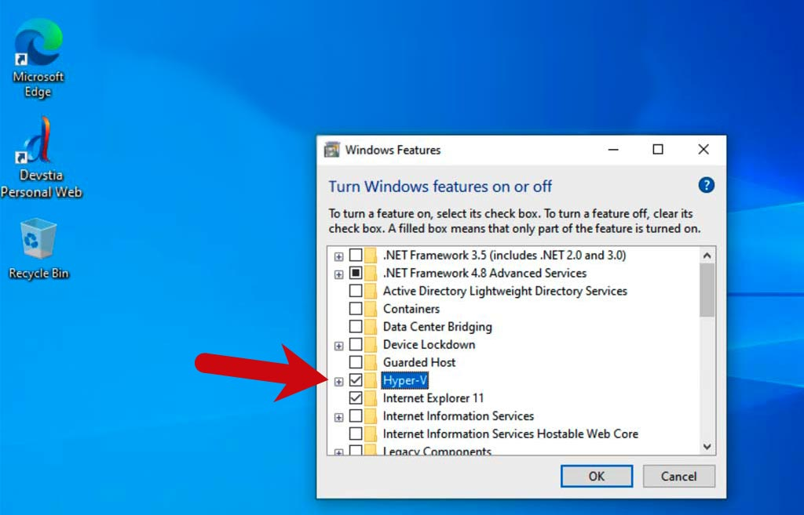

<h3>Hyper-V is not enabled, please enable it.</h3>
<p>
    Click Windows' Start button, type "Turn Windows Features on or off", check Hyper-V.
</p>

<div style="float:right;margin-top:10px;">
    <button class="primary" onclick="location.reload()">Retry</button>
</div>
